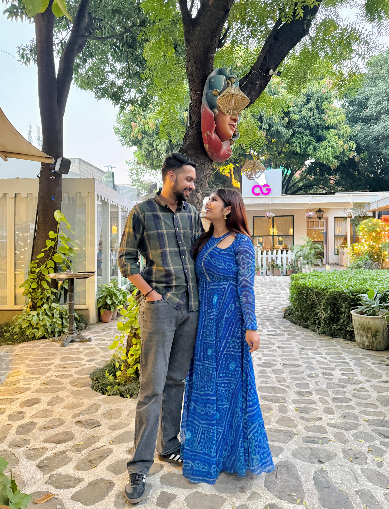
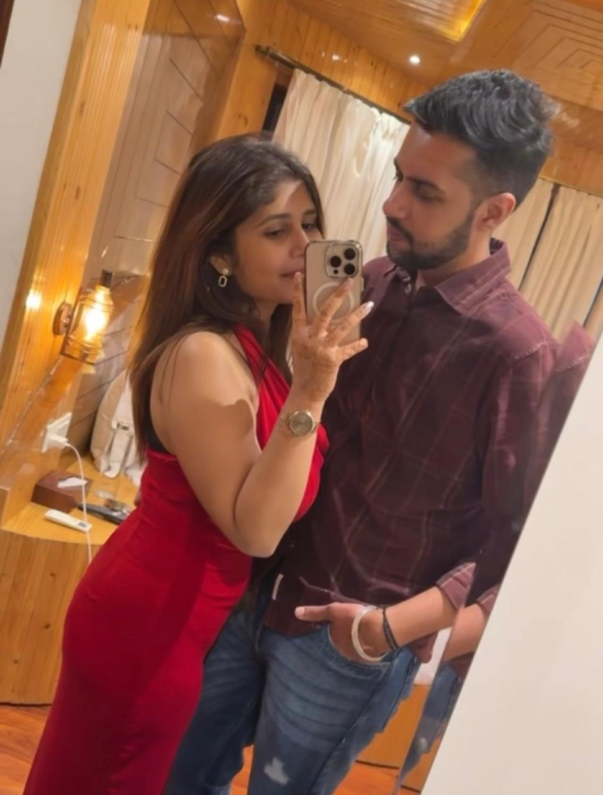
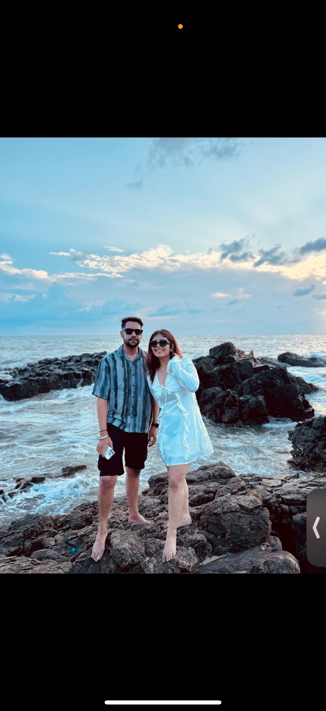
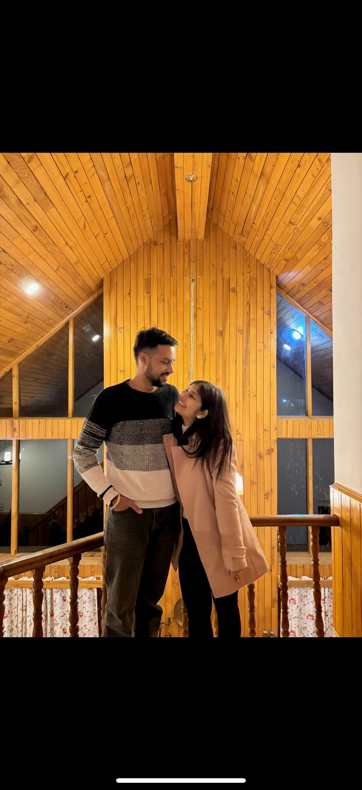
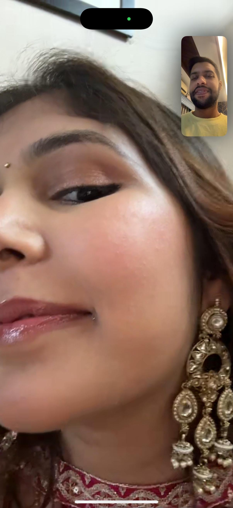
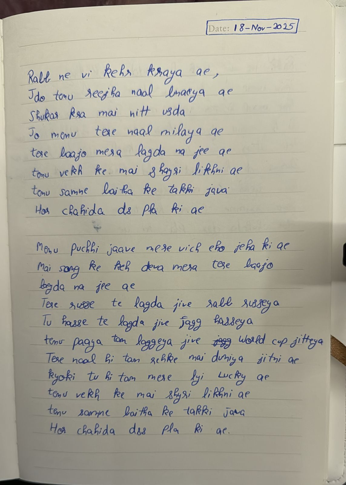
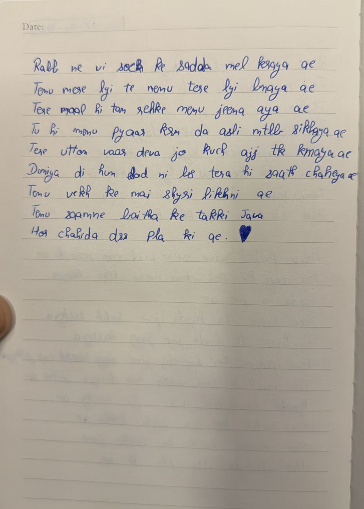

Hi Bhavi.
I didn't build this website to convince you.
I built it because there were things I understood too late.
Our First Chapter

"Some places become beautiful because of where they are.
This one became beautiful because you were there."
The Days I'll Always Smile About

"I don't remember every conversation.
But I remember exactly how happy I felt."
The Version Of Us I Never Want To Forget

"If I could pause one feeling forever...
it would probably look something like this."
One Of My Favourite Memories

"This still makes me smile.
It's one of those tiny moments that probably meant nothing to the world...
but somehow became everything to me."
I know you wanted to post this picture.
And I never let you.
Maybe because a selfish part of me wanted this smile to stay my favourite little secret.
I still think this is one of the most beautiful photographs I've ever seen.
Something I Never Want To Forget


"I wrote these words long before I knew
how precious these memories would become."